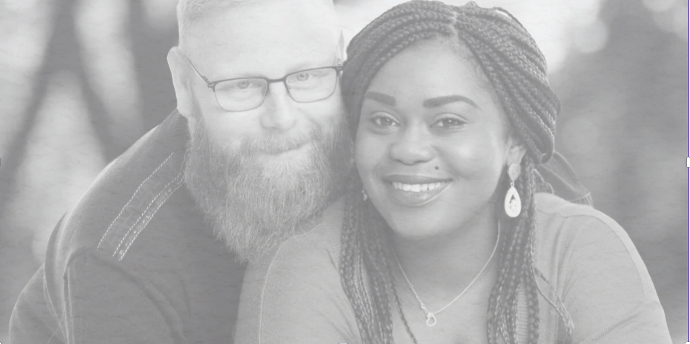
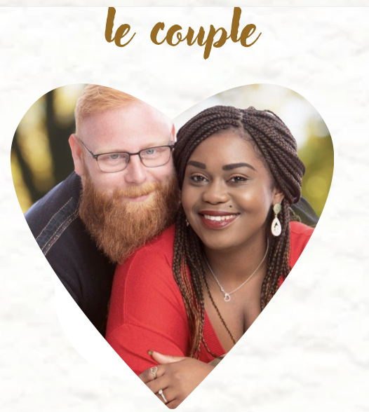

Notre Histoire
Il était une fois… deux âmes que la vie avait placées sur des chemins bien différents, jusqu’au jour où un simple message a bouleversé le cours des choses. Ils se sont rencontrés en mars 2021, sur un site de rencontre. Dès les premières conversations, quelque chose s’est passé. Ce n’était pas juste fluide, c’était évident. Ils se parlaient tous les jours, riaient beaucoup, se découvraient doucement… comme si leurs cœurs s’étaient déjà reconnus. À ce moment-là, le futur marié traversait une période charnière : en pleine reconversion professionnelle après une carrière dans l’armée. Les examens approchaient, le rythme s’intensifiait… alors il a fait un choix : se couper du monde pour se concentrer pleinement. Et peu à peu, le silence s’est installé. Ils se sont perdus de vue. Mais en juin 2021, il est revenu, examen en poche… mais avec un vide : il lui manquait quelque chose de précieux. Sa Stéphanie. Il est revenu avec des excuses sincères, et l’espoir que Stéphanie, la femme avec qui il avait tant partagé, soit encore là… et libre. Elle l’était. Alors ils ont repris là où tout s’était arrêté, avec encore plus de profondeur et d’envie. Un premier rendez-vous était prévu à Beauvais, mais un imprévu de dernière minute a forcé son annulation. Pourtant, la promesse de se voir tenait bon. Et quelques jours plus tard, le 12 juillet 2021, ils se sont enfin rencontrés, en vrai. Lui était venu avec des fleurs et une bouteille de champagne, pour se faire pardonner… et parce qu’il savait ce que sa Stéphanie aimait. Ce jour-là, tout a pris forme : le premier regard, le premier baiser… c’était doux, simple, et pourtant immense. Très vite, l’évidence s’est imposée. Quelques semaines plus tard, le futur marié rencontrait Sianna, la fille de Stéphanie. Une enfant pétillante avec qui le lien fut immédiat, naturel, fort. Ils n’étaient plus deux. Ils étaient trois. Une petite tribu qui, sans le savoir, commençait déjà à construire un avenir ensemble. En janvier 2022, Stéphanie a pris une décision courageuse : signer une rupture conventionnelle pour retrouver son amoureux à Arras. Le 22 mai 2022, elle y emménageait avec sa fille. Ce fut le début d’un quotidien partagé à trois : des rires, des projets, une complicité à toute épreuve. Un foyer, un vrai. Et puis, le 25 février 2024, une nouvelle page s’est ouverte. Une demande en fiançailles, toute simple, dans leur cocon, à la maison. Avec Sianna en complice précieuse.Un moment tendre, sincère, intime. À leur image. Quatre ans après leur rencontre, ils ont décidé de célébrer cet amour comme il le mérite. En août 2025, ils se diront "oui" civilement, entourés de ceux qu’ils aiment. Et pour honorer les racines de Stéphanie, un mariage coutumier aura lieu au Gabon, dans son pays natal, le 2 août 2025, au cœur des traditions et des émotions gabonaise . Parce qu’à deux, puis à trois, ils ont compris une chose essentielle : l’amour, le vrai, c’est celui qui fait de la place à tout le monde. Et le leur est prêt à grandir, à s’épanouir… pour la vie. Comme quoi, parfois, il suffit d’un simple clic pour que le destin fasse son œuvre…

Stéphanie, c’est une femme lumineuse, généreuse et profondément investie. Maman attentionnée, compagne tendre, elle est déterminée, courageuse et animée d’un amour sincère pour les siens. Elle sait écouter, chérir, soutenir. Une femme de cœur, toujours tournée vers l’autre.

Axel, c’est un homme à la fois solide et sensible, romantique et protecteur. Il sait surprendre avec de petits gestes pleins de douceur. Il est loyal, travailleur et plein de respect. Dans les silences comme dans les rires, il est cette présence qui rassure, ce pilier tranquille qui aime sans bruit mais avec profondeur.
À eux deux, ils forment une évidence. Une belle histoire d’amour née d’un hasard numérique, transformée en une réalité merveilleuse.